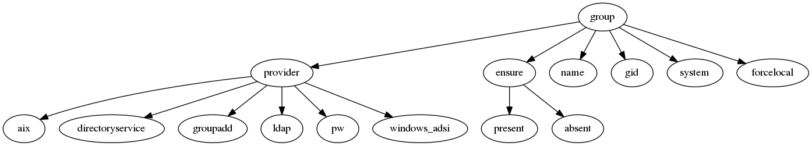
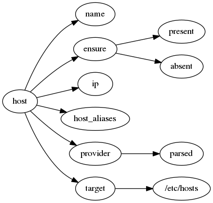
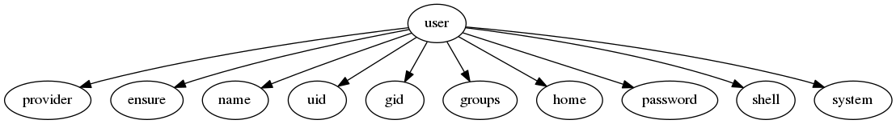
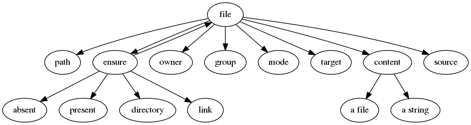

配置管理工具-Puppet
Resource Ordering
回想一下手动配置一个Apache服务器要经过那些步骤：
- 安装软件包httpd
- 根据需要修改配置文件
- 启动httpd服务
那么使用puppet进行配置管理时，应该定义三个相应的资源来执行：
# install httpd
package {"httpd":
ensure => present,
}
file {"/etc/httpd/conf/httpd.conf":
ensure => present,
owner => root,
group => root,
mode => 0644,
source => "puppet:///modules/$module_name/httpd.conf",
}
service {"httpd":
ensure => running,
}
当你实际应用上面的manifests时会发现执行失败（当然也可能成功）。原因呢？前面提到的手动操作步骤是存在先后顺序的，如果不按照相应的顺序，要么失败，要么结果不是预期的。这也就要求puppet中定义的资源在执行时应该可以设定先后顺序，即Resource Ordering。
puppet提供了四个关键字和两个符号来实现”Ordering“的控制：
- before
- require
- notify
- subscribe
- ->
- ~>
前面四个关键字在puppet中称之为元参数（metaparameters），它们可以接受引用资源（resource reference）作为其值。
用before和require改写上面的manifests以按照手动顺序完成：
# install httpd
package {"httpd":
ensure => present,
before => File['/etc/httpd/conf/httpd.conf'],
}
file {"/etc/httpd/conf/httpd.conf":
ensure => present,
owner => root,
group => root,
mode => 0644,
source => "puppet:///modules/$module_name/httpd.conf",
}
service {"httpd":
ensure => running,
require => ['/etc/httpd/conf/httpd.conf'],
}
notify是增强版式的before，当使用了notify的资源发生变化就会主动通知notify指向的资源；而subscribe是增强版的require,当subscribe指向的资源发生的变更，当前资源就会收到通知。
->和~>意思犹如流程图，从前往后一步一步完成：
# install httpd
package {"httpd":
ensure => present,
}
file {"/etc/httpd/conf/httpd.conf":
ensure => present,
owner => root,
group => root,
mode => 0644,
source => "puppet:///modules/$module_name/httpd.conf",
}
service {"httpd":
ensure => running,
}
Package['httpd'] -> File["/etc/httpd/conf/httpd.conf"] -> Service['httpd']
Type
group
在大多数平台上只能创建组，对于添加组成员由用户属性来控制。group类型包含以下一些常用的属性：

host
用来管理/etc/hosts中的host条目。对于MacOS X略有不同。

user
通常用来管理系统用户，缺少一些管理普通用户的特性。user类型包含以下一些常见的属性：

例如
file
管理文件（目录）和它们的属性。file类型具有以下常用属性：

问题解答
- “certificate B: certificate verify failed: [certificate revoked for“
从下面的错误中，可以发现”certificate revoked for ......“，由此可以判断应该是证书过期的原因。
Notice: Starting Puppet client version 3.2.4 Info: Caching certificate_revocation_list for ca Warning: Unable to fetch my node definition, but the agent run will continue: Warning: SSL_connect returned=1 errno=0 state=SSLv3 read server certificate B: certificate verify failed: [certificate revoked for /CN=puppet.virt.liuhui] Info: Retrieving plugin Error: /File[/var/lib/puppet/lib]: Failed to generate additional resources using 'eval_generate: SSL_connect returned=1 errno=0 state=SSLv3 read server certificate B: certificate verify failed: [certificate revoked for /CN=puppet.virt.liuhui] Error: /File[/var/lib/puppet/lib]: Could not evaluate: SSL_connect returned=1 errno=0 state=SSLv3 read server certificate B: certificate verify failed: [certificate revoked for /CN=puppet.virt.liuhui] Could not retrieve file metadata for puppet://puppet.virt.liuhui/plugins: SSL_connect returned=1 errno=0 state=SSLv3 read server certificate B: certificate verify failed: [certificate revoked for /CN=puppet.virt.liuhui] Error: Could not retrieve catalog from remote server: SSL_connect returned=1 errno=0 state=SSLv3 read server certificate B: certificate verify failed: [certificate revoked for /CN=puppet.virt.liuhui]
但是，在实际操作时，我几乎是同时进行的，前后不差三分钟。还是按照官方文档[1]中的提示检查了证书有效期：
openssl x509 -text -noout -in /var/lib/puppet/ssl/certs/hostname.tld.pem | grep -A2 Validity最后发现确实有点问题，日期不是当前日期，而且与”puppet master“的日期亦不同步。由此可以推断可能是”agent“和”master“的时间不同步，而”agent“的系统刚好不在”master“签发的有效时间内，导致证书无效。由此得到教训：“使用Puppet时一定要保证”master”和”slave”的时间同步”。
修正时间同步的问题后，此问题仍然存在，又google了一些讨论[2][3] ：有人提到是”.ssh“目录的问题，经查没有此目录，故排除。
经常反复尝试，发现问题所在，因为使用了三台虚拟机，一个作为Master，两个Slave。发现有一个Slave一直都可以用，不会出上面的错误。但是当先将Master的自管理建立好，然后就再去设定Slave时，这个一直没有问题的Slave也出现相同问题。联想到在Master上运行”puppet agent –server=host –test“，总是提示：
On the master: puppet cert clean puppet.virt.liuhui On the agent: rm -f /etc/puppet/ssl/certs/puppet.virt.liuhui.pem puppet agent -t相当于重新生成一个证书，而在puppet master启动时也生成了一套证书的。猜想是不是因为再次的证书混乱导致puppet master上证书管理混乱？最后发现puppet master生成的证书位于”/var/lib/puppet/ssl”下，而puppet agent生成的证书在”/etc/puppet/ssl”下，但是两次证书的名字一样，使用的CA一样，所以导致puppet master分不清，搞乱了。
为什么puppet master和puppet agent的证书存放目录不一样呢？检查配置文件”/etc/puppet/puppet.conf”发现，其中只有关于master的配置，没有agent的信息，应该是agent的默认路径就是在”/etc/puppet/ssl”，而master的证书信息则在”/var/lib/puppet/ssl”。怎么解决呢？在配置文件”/etc/puppet/puppet.conf“中添加上关于agent的配置信息就好了。
[agent] ssldir = /var/lib/puppet/ssl
问题
如何将puppet中的变量值传递给命令行
写了一个module来执行一个编译任务，目录结果如下：
stackless/
manifests/
init.pp
install.pp
params.pp
其中文件params.pp定义了一些变量，如：
class stackless::params {
$srcPath = "/home/builder/stackless"
$installPath = "/home/builder/local"
}
在install.pp中执行相关的编译工作，如：
class stackless::install {
exec {"configure":
cwd => $stackless::params::srcPath,
path => ["/bin", "/usr/bin"],
command => "chmod 755 configure && ./configure --prefix=$stackless::params::installPath",
}
}
然后使用此模块，编译正常完成，但是程序被安装到系统目录/usr下面。查看“config.log”，发现./configure --prefix=后面的参数为空。猜想应该时puppet直接将command交给了Shell执行，而没有先进行变量替换而导致的问题。还没有深入了解是否有其它机制将变量先替换然后再转交给Shell。